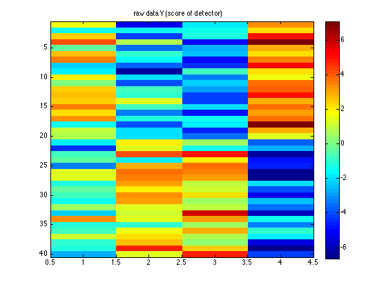
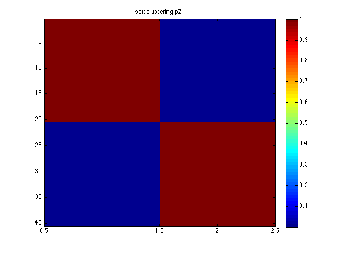
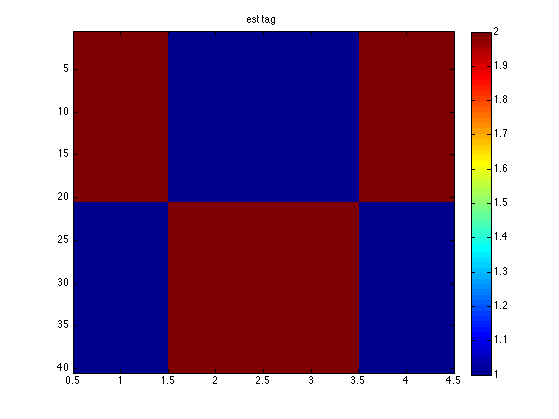

% Z -> Xj -> Yj % Z is mixture node % Xj is binary tag % Yj is response of tag detector % We generate some synthetic correlated binary data % consisting of 10s and 01s setSeed(0); D = 4; % num bits/ nodes mixWeights = normalize(ones(1,D)); N2 = 20; X1 = repmat([1 0 0 1], N2, 1); X2 = repmat([0 1 1 0], N2, 1); X = [X1; X2]; X = X+1; N = 2*N2; options = {'maxIter', 10, 'verbose', true}; K = 2; [model, loglikHist] = mixDiscreteFit(X, K, options{:}); %{ This works as expected: in cluster 1, the first feature (col 1) is most likely 1, the second feature (col 2) is most likely 0 etc > squeeze(model.cpd.T(1,:,:)) % soft version of 0 1 1 0 pattern ans = 0.0455 0.9545 0.9545 0.0455 0.9545 0.0455 0.0455 0.9545 and vice versa for cluster 2 squeeze(model.cpd.T(2,:,:)) % soft version of 1 0 0 1 pattern ans = 0.9545 0.0455 0.0455 0.9545 0.0455 0.9545 0.9545 0.0455 %} % Now generate noisy function of X setSeed(0); % mu(c,j) % Make off bits be -ve, on bits be +ve mu = [-1 -2 -3 -4; 1 2 3 4]; sigma = 2; Y = zeros(N, D); for j=1:D for c=1:2 ndx = find(X(:,j)==c); Y(ndx,j) = sigma*randn(numel(ndx),1)+mu(c,j); end end [model2] = noisyMixModelFit(X, Y, K); %{ Mix model Z->X is same as before (modulo label switching) squeeze(model2.mixmodel.cpd.T(1,:,:)) % soft version of 1 0 0 1 pattern squeeze(model2.mixmodel.cpd.T(2,:,:)) % soft version of 0 1 1 0 pattern Obs model for j=1:D mu2(:,j) = model2.obsmodel.localCPDs{j}.mu'; end mu2 = -0.8839 -2.1571 -2.9969 -4.0548 1.1921 2.0855 2.5789 3.8201 %} % "batch" inference [pZ, pX] = noisyMixModelInfer(model2, Y); %{ % sequential inference pZ2 = zeros(size(pZ)); pX2 = zeros(size(pX)); for i=1:N [pZ2(i,:), pX2(i,:,:)] = noisyMixModelInfer(model2, Y(i,:)); end assert(approxeq(pZ, pZ2)) assert(approxeq(pX, pX2)) %} % Check that each row assigned to 'correct' cluster [pmax, Zhat] = max(pZ,[],2); % Zhat(1:20) = 1 for 1st cluster % Zhat(21:40) = 2 figure; imagesc(Y); colorbar; title('raw data Y (score of detector)'); figure; imagesc(pZ); colorbar; title('soft clustering pZ') % Now check that we infered correct tag, marginalizing out cluster Xhat = zeros(N, D); for j=1:D [pmax, Xhat(:, j)] = max(pX(:, :, j), [], 2); % pX is N*2*D end % Xhat recovers X figure; imagesc(X); colorbar; title('true tag'); figure; imagesc(Xhat); colorbar; title('est tag');
initializing model for EM 1 loglik: -112.753 2 loglik: -97.4307 3 loglik: -48.0588 4 loglik: -34.1614 5 loglik: -34.1568 6 loglik: -34.1568 initializing model for EM 1 loglik: -111.634 2 loglik: -95.9039 3 loglik: -44.8179 4 loglik: -29.1651 5 loglik: -29.1122 6 loglik: -29.1122  